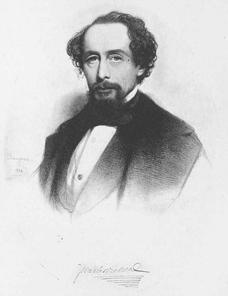
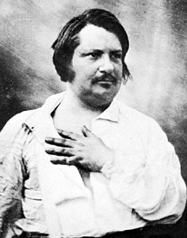
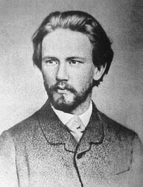
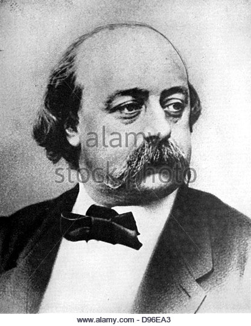

Charles dickens
c. 1851-1860

pyotr llyich tchaikovsky
c. 1885-1893
activitycolors
wolfgang_amadeus mozart
c. 1781

honore de balzac
"orgies of work"

W.H. auden
"the chemical life"

gustave flaubert
while writing madame bovaryc. 1851-1856

charles darwin
secretly working c. 1842-1859
benjamin franklin
advice c. 1851-1856